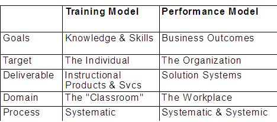

| Artifact: Human Capability Assessment (ORG 308) |
 |
|
| To understand the gap between employees’ current and required capabilities in critical knowledge areas such as process, organization, and technology in order to define a reskilling strategy, build a training plan and specifications, and improve the management system to support high performance. |
| Parent Deliverables | ||
|---|---|---|
| Roles | Responsible: | Modified By: |
| Tasks | Input To: | Output From: |
| Main Description | The work product is a matrix linking employees to their skills and skill levels. A gap analysis will indicate top priorities to be addressed. |
|---|---|
| Brief Outline | This is a largely textual document where data may be represented graphically for easier comprehension
 Note the contrast of the traditional training model with the more modern view of a performance model. IBM consultants should ensure that, even though this work product is designed to help identify training requirements, the overall context is performance. This permits the identification of other performance enablers that may be required as well. The language used in the deliverable should reflect this broader view of capability. |
IT IS VERY IMPORTANT to ensure that skills data is used appropriately. Using it for selection or promotion of employees raises significant legal issues. If the data is to be used as a primary, direct source for selection or promotion, a great degree of rigor must be used. The process and data must be legally defensible and the consultants should be comfortable testifying in court. In these cases, it is critical to use consultants with the requisite academic and experiential qualifications. Similarly, it is important that this assessment be kept firmly in the context of the initiative it supports, and not become connected with the client’s performance appraisal process. In workshops, spend enough time explaining categories and levels of capabilities, as well as differentiating among skills, knowledge, and behaviors, and ensure that the client understands before proceeding. Have examples and “non-examples” ready. Pay special attention to capabilities residing in a single individual -- they may require replication in the new environment. IBM consultants should also make clear that behind a competency model there are many theories that confirm its value and that make it for, for example, “the balance of competencies.” The balance of competence is a method and a means used to manage skills and attitudes by:
In fact, this method is based on the constructivist ideology that considers people as the protagonists of their life, because they can construct step-by-step, choice after choice, their way of being and their way of living. In fact, what is important to underline is that the balance of competencies is not a method based only on the firm requirements, (for example, “Every one in my firm must be able to use PowerPoint”), but also on the professional (slope) orientation and desires of the employee. Then by using different type of tests (open/close) the balance of competence becomes a means to:
By using this method, a firm can assure the best possible scenarios in “taking care” of its intellectual capital. |
| Impact of not having | A poor understanding of current employee skills can jeopardize the efficient and thorough development of a reskilling and training strategy. Inadequate training can result, which can leave gaps in skills that might impede the successful implementation of the initiative. Failing to perform an analysis of the root cause for capability gaps can lead to the false assumption that training will solve all the problems (In a recent client engagement, only 15% of performance issues could be addressed by training.) |
|---|---|
| Reasons for not needing | If the current organization assessment shows evidence of a strategic, responsive, flexible competency management process that is regularly used to predict future skill needs and fill current and future gaps, then the client is likely to have outputs that are the equivalent of this work product. The client should employ its process to make sure it has identified all new knowledge, skills, and behaviors required by the initiative, and has identified the root causes of performance issues. The following are NOT examples of a good competency management process, and if they are encountered, the work product should be used:
|
| Guidelines | |
|---|---|
| Supporting Materials | |
| Estimation Considerations |
| © Copyright IBM Corp. 1987, 2012 All Rights Reserved Property of IBM These materials are intended only for use as part of an IBM engagement |